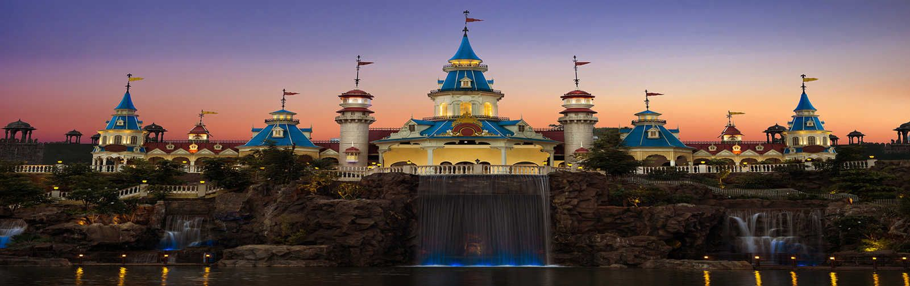

| VISITING PLACES |
| Name |
Origin |
Photo |
| SHANIWARWADA FORT
| PUNE (MAHARASTHRA)
|  |
| Shanivar wada was the seat of the Peshwa rulers of the Maratha Empire until 1818, when the Peshwas lost control to the East India Company after the Third Anglo-Maratha War. Following the rise of the Maratha Empire, the palace became the center of Indian politics in the 18th century.[2] |
Since 1732 |
Place 1 |
| SINHAGAD FORT
| PUNE (MAHARASTHRA)
|  |
| Sinhagad is a fort located roughly 30 kilometres southwest of the city of Pune, India. Previously called Kondhana the fort has been the site of many important battles, most notably the Battle of Sinhagad in 1671. It was also strategically located at the centre of a string of other forts such as Rajgad, Purandar and Torna. |
Since 1732 A.D |
Place 2 |
| RAJIV GANDHI NATIONAL PARK
| PUNE (MAHARASTHRA)
|  |
| The Rajiv Gandhi Zoological Park, commonly known as the Rajiv Gandhi Zoo, is located in Katraj near the city of Pune in India. It is managed by the Pune Municipal Corporation. The 130-acre (53 ha) zoo is divided into three parts: an animal orphanage, a snake park, and a zoo, and includes the 42-acre (17 ha) Katraj Lake |
Since 1999 14th March |
Place 3 |
| LAVASA
| PUNE (MAHARASTHRA)
|  |
| Lavasa is a private hill city being developed by Lavasa Corporation Limited where people can live, work, learn and play in harmony with nature. An inclusive city, based on the principles of New Urbanism, it is 3 hours' drive from Mumbai and 1 hour from Pune |
CITY NEAR PUNE |
Place 4 |
| IMAGICA
| PUNE (MAHARASTHRA)
|  |
| A place so interesting you'd wish you were here every day. A place where the fun begins and never ends. A place where you'd be friends with a talking dog, dine with a lion chef and fly with an elephant. A place where you’d experience zero gravity, fight Mogambo, feel the thrill of exciting rides and even save a pirate. |
April 2010 |
Place 5 |
| LONAVLA
| PUNE (MAHARASTHRA)
|  |
| Lonavala is a hill station surrounded by green valleys in western India near Mumbai. The Karla Caves and the Bhaja Caves are ancient Buddhist shrines carved out of the rock. They feature massive pillars and intricate relief sculptures. |
HILL STATIONS |
Place 6 |